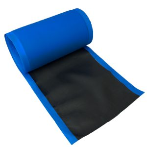

REPARACIONES DE UNA PIEZA

La línea completa de unidades combinadas de reparación / enchufe Uni-Seal Ultra de TECH establece el estándar de la industria en cuanto a calidad y confiabilidad. Uni-Seals proporciona una reparación rápida / permanente de la polarización y reparación de neumáticos radiales de motocicletas, pasajeros, camiones ligeros, camiones y tractores. Las reparaciones Uni-Seal MAX reforzadas con tejido cruzado de TECH proporcionan una reparación simple, rápida y segura de neumáticos radiales todoterreno comerciales, agrícolas, industriales y pequeños. Los Uni-Seals se pueden pedir con goma gris amortiguadora para aplicaciones de curado químico o con goma Thermacure para aplicaciones de curado por calor. Un cable conductor insertado en cada Uni-Seal que facilita la inserción de la unidad de reparación en la lesión. Las reparaciones TECH Uni-Seal Ultra fueron las primeras reparaciones en el mundo en aprobar el FMVSS (Normas y Reglamentos Federales de Seguridad para Vehículos Motorizados) 139 ¡Prueba de resistencia!
REPARACIONES DE STEM
La línea completa de vástagos Uni-seal de TECH utiliza goma de mascar gris en el vástago que forma una unión permanente que dura la vida útil del neumático ya que sella la humedad y los contaminantes. Los vástagos Uni-seal proporcionan una reparación rápida y permanente de neumáticos diagonales y neumáticos radiales para motocicletas, pasajeros, camionetas, camiones y tractores. Los vástagos Uni-seal cuentan con un cable conductor insertado en cada vástago que facilita la inserción de la unidad de reparación en la lesión. Los vástagos Uni-seal deben usarse junto con la unidad de reparación de parches TECH apropiada en el interior del neumático y con el fluido vulcanizador TECH.
REPARACIONES RADIALES
TECH fue la primera compañía en introducir las reparaciones radiales de "Lesión por sobre centro"! La línea completa de unidades de reparación radial Centech de TECH está diseñada y diseñada para reparar la corona, el hombro o la pared lateral de todos los tipos y tamaños de neumáticos radiales y está diseñada para durar la vida útil del neumático. Las reparaciones radiales de Centech vienen en una amplia gama de tamaños para procesos de aplicación de curado químico y térmico.
REPARACIONES DE BIAS

Las reparaciones de neumáticos Bias Ply (BP) de TECH se producen con goma de amortiguación gris suave para aplicaciones de reparación de curado químico en frío, con goma Thermacure para aplicaciones de reparación de curado por calor y en estilo de tela. Las reparaciones de BP están diseñadas para reparar permanentemente aplicaciones de pasajeros, camiones ligeros, camiones, agrícolas, skidder (SK) y fuera de carretera de servicio liviano.
REPARACIONES UNIVERSALES
Las reparaciones de uso múltiple AP de goma no reforzadas de TECH están diseñadas para su uso tanto en neumáticos radiales como neumáticos. La nueva composición y el caucho más grueso resisten la reparación del hoyuelo a través de la lesión del neumático. Disponible con chicle gris y chicle Thermacure. Las reparaciones de uso múltiple TECH MP se producen con un refuerzo de tejido cruzado único para reparar lesiones más grandes en el área de la corona del neumático con el uso del vástago TECH del tamaño adecuado.
REPARACIONES DE TUBOS Y VÁLVULAS
Las reparaciones y las válvulas de reemplazo de tubos redondos y ovalados TECH de 2 vías son las mejores del mercado actual. Cada reparación de tubos y válvulas es permanente, segura y la reparación es el doble de fuerte que el tubo en sí ... ¡tenemos la investigación para respaldarlo! Se puede aplicar mediante procesos de reparación en frío o en caliente.
INSERTOS DE NEUMÁTICOS SIN TUBO
TECH produce y distribuye una amplia gama de insertos de reparación en el volante reforzados y no reforzados que reparan pequeñas lesiones en neumáticos sin cámara para automóviles, camiones, Ag y vehículos todoterreno. Los Permacures de TECH son insertos reforzados con nylon que están cubiertos con goma de amortiguación gris para permitir una reparación permanente de los neumáticos de tipo todoterreno mientras sirven como reparación temporal de los neumáticos de los vehículos al volante. Los insertos TECH Flow Seal son neumáticos sin cámara autovulcanizantes sin refuerzo reparados, también producidos con goma gris. TECH también distribuye una gama de insertos de reparación de cuerdas no vulcanizantes en varios colores, anchos y longitudes que deben usarse solo como reparaciones temporales.
ALMOHADILLA / CAUCHO SIN CURAR

Los compuestos TECH Vul-Gum y de caucho natural proporcionan una excelente adherencia verde para la aplicación de la unidad de reparación inicial y una fuerte adhesión a las superficies de caucho preparadas, Tech Vul-Gum y Stripping Stock son excelentes para su uso en unidades de reparación flotantes, rellenos de paletas o para la instalación de reparaciones puntuales. Se puede utilizar en protocolos de vulcanización por calor y presión.
KITS DE REPARACIÓN DE NEUMÁTICOS
Los kits de reparación de neumáticos TECH se crean para proporcionar una amplia variedad de productos y herramientas de reparación de neumáticos y tubos asociados con una aplicación de reparación específica. Los kits de reparación TECH eliminan las conjeturas al seleccionar todos los productos y herramientas que pueda necesitar, así como también proporcionan instrucciones detalladas para completar la reparación. Los kits de TECH están empaquetados en estuches y gabinetes atractivos y funcionales diseñados específicamente para mantener todo organizado.
LETRAS DE QUEMADO
Los logotipos de TECH ID son ideales para la identificación rápida y simple de los abultamientos de las paredes laterales asociados con las lesiones de los neumáticos radiales de camiones. Los logotipos de identificación también pueden identificar las posiciones de los neumáticos, así como identificar flotas específicas o recauchutadoras. Con los logotipos de TECH ID, la entidad que posee o ha reparado / recauchutado el neumático se identifica rápidamente y las autoridades de inspección de transporte pueden determinar rápidamente que una protuberancia en un neumático radial de camión es el resultado de una reparación adecuada de la pared lateral frente a un neumático defectuoso.
LIMPIADORES DE GOMA
TECH Rub-O-Matic es el estándar de oro para la eliminación rápida y fácil de contaminantes del revestimiento interior antes del pulido. Rub-O-Matic está basado en solventes, sin embargo no contiene CFC.
FLUIDO / CEMENTO DE VULCANIZACIÓN
El fluido de vulcanización químico TECH se utiliza con la línea completa de goma de mascar gris de TECH y las reparaciones de neumáticos Thermacure. Fácil de usar, de secado rápido al tiempo que proporciona una adhesión óptima, el fluido de vulcanización química de TECH garantiza una excelente adhesión y una reparación sólida en todo momento. Se puede utilizar en aplicaciones de unidades de reparación en frío y en caliente. No contiene CFC's.
MONTAJE / DESMONTAJE / SELLO DE LLANTA
Mounting Compound is what you need for those hard to mount tires when the distance between the rim and the tire bead is significant. Can be diluted and serve as a mounting lubricant.
SELLADORES
TECH Tire Sealant sella efectivamente las lesiones causadas por la perforación de objetos de hasta 3/16 ″, 5 mm en todas las aplicaciones todoterreno. Funciona en neumáticos con cámara y sin cámara. Sigue siendo efectivo para la vida útil del neumático. Los selladores de neumáticos TECH son biodegradables y solubles en agua. Se reducen los gastos de mantenimiento causados por el tiempo de inactividad del equipo debido a pisos o fugas difíciles de encontrar.
LIMPIADORES DE MANOS
¡y lavar es más importante que nunca! TECH ofrece los mejores limpiadores de manos para trabajo pesado y activados por agua que existen hoy en día para técnicos, mecánicos, profesionales y aficionados al bricolaje porque limpian con agua, no con solventes. Todos los limpiadores de manos TECH son ecológicos y limpiarán casi cualquier cosa de sus manos, incluyendo aceite, grasa, polvo de neumáticos, suciedad y otros contaminantes. No dañará ni rayará su piel, no obstruirá el drenaje, no dejará residuos grasosos. Larga vida útil.